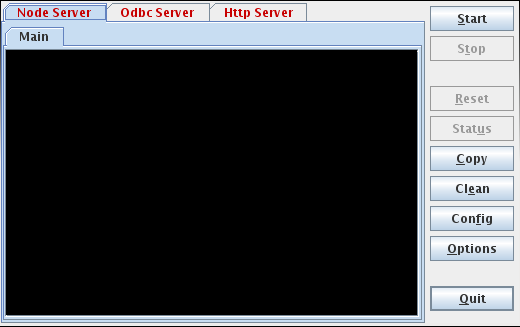
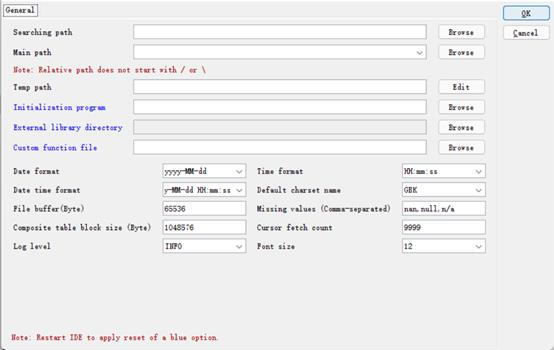

10.1.2 Configuring clustered servers
Run the esprocs.exe file under esProc installation directory¡¯s esProc\bin path to launch or configure clustered servers. The jars needed by the file will be automatically loaded under the installation directory. Note that the configuration files – raqsoftConfig.xml and unitServer.xml – must be placed under the esProc\config path in esProc installation directory. The following window pops up after the server is started:

During the execution of esprocs.exe, the window displays the loaded initial information, which is set in the configuration file raqsoftConfig.xml. Click Options on the right-side menu to configure information of clustered servers. We have the following pop-up window and modify the main path:

On the page, you can configure main path, search path, date and time format, default charset, log level, number of bytes in the file buffer area and other information. For the Log Level, there are OFF, SEVERE, WARNIGN, INFO, AND DEBUG, whose priorities decrese from left to right. The OFF level turns of any log output. The INFO level outputs information of levels on and below it, including SEVERE, WARNING and INFO. Other levels also output information in this way.
The configuration information is the same as the configuration in esProc IDE. It can be viewed or modified in Tool>Options>Environment:
When exiting a clustered server from esProc IDE or changing configurations of a node, the current or modified configuration parameters will be saved in raqsoftConfig.xml. So, pay attention to the probable collision when modification is needed.
Click Config on the right-side menu to configure node information on Node page:

Temp file timeout sets the life span (Hours) for a temporary file. Check interval is the number of seconds between two expiration checks, which must be a positive value or 0. Proxy timeout is the agent life span, i.e. the remote cursor and task space¡¯s life span (Hours). Do not perform expiration check if Temp file timeOut or Proxy timeout is set as 0.
Under Host list, you can configure IP addresses and port numbers of all nodes on the local machine that potentially can run servers. A server, at the launch, automatically searches the node list for an idle one that will be given an assignment to execute. The IP address should be real, and multiple IP addresses are allowed when there are network adapters. Auto start server, once selected, will automatically start clustered servers after the server cluster begins to run.
Under Host list, Max task num is the maximum number of tasks a node is allowed to perform. For a same IP address, you can configure multiple nodes that access data in different data zones.
The Node Server¡¯s Enable clients tab offers the settings of client-side whitelist:
Select Check clients to configure an IP whitelist that can invoke clustered servers under Clients hosts. IP addresses that are not in the whitelist cannot invoke clustered servers for computations.
When configurations for clustered servers are done, click OK to automatically set the corresponding configuration file unitServer.xml, as shown below:
<?xml version="1.0" encoding="UTF-8"?>
<SERVER Version="3">
<TempTimeOut>12</TempTimeOut>
<Interval>6</Interval>
<ProxyTimeOut>12</ProxyTimeOut>
<Hosts>
<Host ip="192.168.1.112" port="8281" maxTaskNum="3" preferredTaskNum="4">
>
</Host>
</Hosts>
<EnabledClients check="true">
<Host start="192.168.1.112">
</Host>
</EnabledClients>
</SERVER>